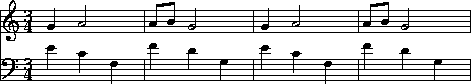

|
|
Humdrum provides a
**MIDI
representation that closely
parallels the commercial MIDI specification but conforms
to the Humdrum data format.
This representation provides an intermediate format;
using Humdrum commands such as
perform
and
smf,
true MIDI data can be generated.
However, since the **MIDI representation conforms to the
Humdrum syntax, the data can be manipulated, modified and searched
in the same way as other Humdrum data.
For example, we can use
grep
to search MIDI data, etc.
MIDI is a type of "tablature" notation. It describes a set of performance actions rather than specifying either the sounded result or the analytic notation. MIDI represents note-related events for various "channels." MIDI events include note-on, note-off, key-velocity, after-touch, control codes, and system-exclusive codes. The original commercial MIDI standard is unable to represent many other musically pertinent signifiers such as pitch spelling (e.g., F-sharp versus G-flat), stem directions, ties, slurs, phrasing, etc. In addition, MIDI does not represent rests.
A simple
**MIDI
example is given below.
It consists just a single note (middle C):
!! A single MIDI note.**MIDI*Ch154/60/6480/-60/64*-
Notice that there are two **MIDI data tokens:
one to specify note-on and one to specify note-off events.
Each **MIDI data token consists of three elements or components,
delimited by a slash character (/).
The first element in the data token represents the number of clock
ticks before the current event is to occur.
The absolute duration of a single clock tick is determined by the
**MIDI clock speed, which is variable.
In our example, 54 clock ticks elapse before the note is turned on,
and another 80 clock ticks elapse before the note is turned off.
The initial pause before the first note begins is not necessary;
however, many MIDI cards introduce a brief delay before beginning to send
the first data in a stream.
The leading pause prevents a "rushed" burst of initial notes.
The second element in a data token represents the
**MIDI key number.
Successive numbers refer to semitone pitches where middle C
is designated key 60.
Key-off events are represented by negative integers, so -60
means turn off key 60.
Key numbers range between 1 and 127.
The third element in a data token represents the
**MIDI key velocity.
MIDI instruments normally interpret key velocity as
dynamic or accent information.
Higher key-velocity values are associated with accented notes.
In the case of key-off events, the key-velocity component represents
the key-up velocity.
Unlike most other Humdrum representations, the
**MIDI
format requires two data tokens for each note.
The following example shows a three note C-major triad.
The
**kern
data is shown in the left spine
with the corresponding **MIDI data in the right spine.
Notice that each data token consists of three subtokens,
one for each note:
!! A C-majortriad. **kern**MIDI **Ch1 2c 2e 2g72/60/64 72/64/64 72/67/64 .144/-60/64 144/-64/64 144/-67/64 *-*-
Middle C corresponds to MIDI key 60; The pitches E4 and G4 correspond to MIDI keys 64 and 67 respectively. The half-note durations result in a delay of 144 clock ticks before the key-off commands are executed. Notice that all key-off events occur simultaneously.
Suppose we add a second chord consisting of the dyad D4 and F4.
The dyad begins at the same time that the C major triad ends.
This results in five subtokens in the corresponding **MIDI
data record.
Three key-off events are synchronous with two key-on events:
!! Two chords.**kern**MIDI **Ch1 2c 2e 2g72/60/64 72/64/64 72/67/64 4d 4f144/-60/64 144/-64/64 144/-67/64 144/62/64 144/65/64 .72/-62/64 72/-65/64 *-*-
Notice that the difference in duration between the half-notes and quarter-notes is reflected when the notes are turned off rather than when the notes are turned on.
Example 7.1 illustrates a slightly more complex excerpt from the beginning
of Darius Milhaud's Touches Blanches.
Example 7.1 Excerpt from Darius Milhaud's Touches Blanches

The
!!!: Milhaud, D.!!!OTL: TouchesBlanches **kern**kern **MIDI **MIDI *staff2*staff1 *Ch1 *Ch1 *clefF4*clefG2 *clefF4 *clefG2 *k[]*k[] *k[] *k[] *M3/4*M3/4 *M3/4 *M3/4 =1-=1- =1- =1- 4e(4g 72/64/64 72/67/64 4c2a) 72/-64/64 72/60/64 72/-67/64 72/69/64 4F. 72/-60/64 72/53/64 . =2=2 =2 =2 4f(8a 72/-53/64 72/65/64 72/-69/64 72/69/64 .8b . 36/-69/64 36/71/64 4d2g) 36/-65/64 36/62/64 36/-71/64 36/67/64 4G. 72/-62/64 72/55/64 . =3=3 =3 =3 4e(4g 72/-55/64 72/64/64 72/-67/64 72/67/64 4c2a) 72/-64/64 72/60/64 72/-67/64 72/69/64 4F. 72/-60/64 72/53/64 . =4=4 =4 =4 4f(8a 72/-53/64 72/65/64 72/-69/64 72/69/64 .8b . 36/-69/64 36/71/64 4d2g) 36/-65/64 36/62/64 36/-71/64 36/67/64 4G. 72/-62/64 72/55/64 . .. 72/-55/64 72/-67/64 *-*- *- *-
**MIDI
representation always expects a tandem interpretation
indicating the MIDI channel assignment.
In Example 7.1 both parts have been assigned to channel 1.
Once again, simultaneous key-on and key-off events often appear as double-stops.
Also notice that an additional data record is required at the end
of the passage in order to turn off the final notes.
The
midi
command converts Humdrum
**kern
data into Humdrum **MIDI data.
By way of example, the above **MIDI data can be generated
as follows:
midi inven05.krn > inven05.hmd
The .hmd filename extension is a common way of designating
Humdrum MIDI data.
Since the **kern representation does not encode key-velocity
information, the
midi
command assumes a default key velocity of 64
(from a range of 1 to 127).
If the input is monophonic,
midi
will also allow the user to set a fixed note duration using the
-d
option.
This is useful for auditing notes that do not have duration values.
For example, a Gregorian chant might be represented without durations.
The following command takes a file containing a 12-tone row (pitch information only)
and produces a **MIDI output where all notes assigned to a
quarter duration:
midi -d 4 tonerow > tonerow.hmd
The most common use of **MIDI data is to create a
standard MIDI file using the
smf
command, or to listen to the output using the
perform
command.
In some cases, it is useful to carry out
processing of **MIDI data itself.
The
perform
command allows the user to listen to synthesized performances of
**MIDI-format input.
When invoked,
perform
provides a simple interactive environment suitable for
proof-listening and other audition tasks.
The
perform
command accepts any Humdrum input; however,
only
**MIDI
spines present in the input stream are performed.
Non-MIDI spines are simply ignored and do not affect the sound output.
The
perform
command generates serial MIDI data which are sent directly to a
MIDI controller card or on-board sound-card.
The
perform
command is typically the last command in a pipe preceded by the
midi
command.
For example, a **kern-format score can be heard
using the following command:
midi clara.krn | perform
When invoked, the perform command reads in the entire input into memory. This allows the user to move freely both forward and backward through the MIDI score.
The perform command provides a set of interactive commands that allow the user to pause and resume playback, to change tempo, to move to any measure by absolute or relative reference, and to search forward or backward for commented markers. The perform command remains active until either the end of the score is reached or the user terminates performance by typing the letter `q' or the escape key (ESC).
Playback can be paused by typing the space-bar and resumed by typing any key. Typing the carriage return by itself will return to the beginning of the score and re-initiate playback. If a number is typed before pressing the carriage return then perform will search for a corresponding measure number and initiate playback from that measure. Other commands are provided that allow moving forward or backward a specified number of measures.
In the default operation,
perform
echoes all global comments on the screen as the comments are
encountered in the input.
For inputs containing appropriate annotations, the echoing of comments
can provide useful visual markers or reminders of particular
moments in the sound output.
Whether or not global comments are echoed on the standard output,
users can use the
perform
forward-search (/) or backward-search (?) commands
to move directly
to a particular commented point in the score.
For example, if an input contains a global comment containing
the character string "Second theme,"
then the user can move immediately to this position in the input by
entering the following command:
/Second theme
Similarly, backward searches can be carried out by typing the
question mark (?) rather than the slash.
If the search is successful, playback continues immediately from
the new score position.
The midi command provides a useful -c option that causes each data record to be repeated as a comment. For example, when the -c option is used a sequence of data records such as the following:
4C4E 4G 4c 4D4F 4G 4B 4AA4E 4A 4c
is transformed to:
4C4E 4G 4c !!4C4E 4G 4c 4D4F 4G 4B !!4D4F 4G 4B 4AA4E 4A 4c !!4AA4E 4A 4c
Since, by default, the
perform
command echoes all global comments on the screen during playback,
this means that the Humdrum data will also appear on the screen
as it is being played.
In addition, the commented data records are accessible to the
forward- and backward-search commands.
For example, in the
**kern
representation, pauses
are indicated by a semicolon;
hence the user might search for the next pause symbol by typing:
/;
Similarly, the user could search for a particular pitch, e.g.
/gg#
Since the perform command accepts any Humdrum input, other Humdrum data may be used for searching. For example, the input data might contain melodic interval data (see Chapter 11), allowing the user to search for a particular interval such as a diminished octave:
/d8
If the string pattern is found in the input, perform will move immediately forward (or backward) to the next occurrence and begin playing from that point.
During playback, the tempo can be modified by typing the
greater-than (>) and less-than (<) signs
to increase or decrease the tempo respectively.
In addition to modifying the tempo interactively,
the performance tempo may be specified either in the command line
or in the input Humdrum representation.
The tempo may be specified on the command line by using the
-t
option.
For example, the following command causes the file Andean
to be performed at half tempo:
midi Andean | perform -t 0.5
Performing at fast speeds can often be useful when scanning for a particular passage.
Tempo specifications may be present in the input data
via the tandem interpretation for metronome marking (e.g. *MM96).
If no tempo information is available,
perform
uses a default tempo of 66 quarter-notes per minute.
In rare circumstances, ciphers (stuck notes) can occur during MIDI performances; for instance, an intermittently functioning MIDI cable may fail to convey a "note-off" instruction to an active synthesizer. The p command ("panic") turns off all active notes. Should a cipher remain after terminating the perform command, the Humdrum tacet command can be used to send "all-notoff" commands on all MIDI channels.
In Chapter 12, we will see how perform can be used in conjunction with other commands (such as extract and yank) to listen selectively to specific parts or passages. In Chapter 21 we will use perform in conjunction with the patt command to listen to patterns (such as harmonic, rhythmic and melodic patterns) found in some repertory.
Another MIDI-related tool is the
smf
command.
This command allows the user to create "standard MIDI
files" from Humdrum **MIDI-format files.
Standard MIDI files are industry-standard binary files that
can be imported by a variety of MIDI applications software packages
on many different platforms,
including sequencer programs and most music notation packages.
The
smf
command translates only **MIDI input spines;
all non-**MIDI spines are simply ignored.
Suppose we begin with a **kern-format file named joplin.
We can create a standard MIDI file as follows:
midi joplin | smf > joplin.smf
The smf command provides two options. The -t option allows the user to set the tempo, whereas the -v option allows the user to specify a default MIDI key velocity. See the Humdrum Reference Manual for details.
In this chapter we have learned how Humdrum data can be output
as MIDI data.
Humdrum provides a **MIDI representation that closely
parallels MIDI but remains in conformity with the Humdrum syntax.
This means that the data can still be processed with other
Humdrum tools (as we will see in later chapters).
The
midi
command can translate
**kern
data to
**MIDI
and the
perform
and
smf
commands can be used to generate true MIDI data
for listening.
The
perform
command provides a simple interactive command-line sequencer
for playing whatever input is provided.
The
smf
command generates standard MIDI files that can be
used to transport MIDI data to a vast array of
commercial and non-commerical applications software.
In
Chapter 30
we will explore some of the Humdrum tools for
inputting MIDI data into Humdrum.